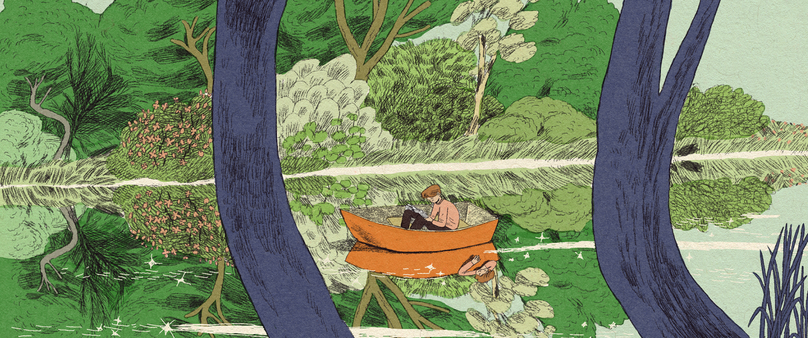
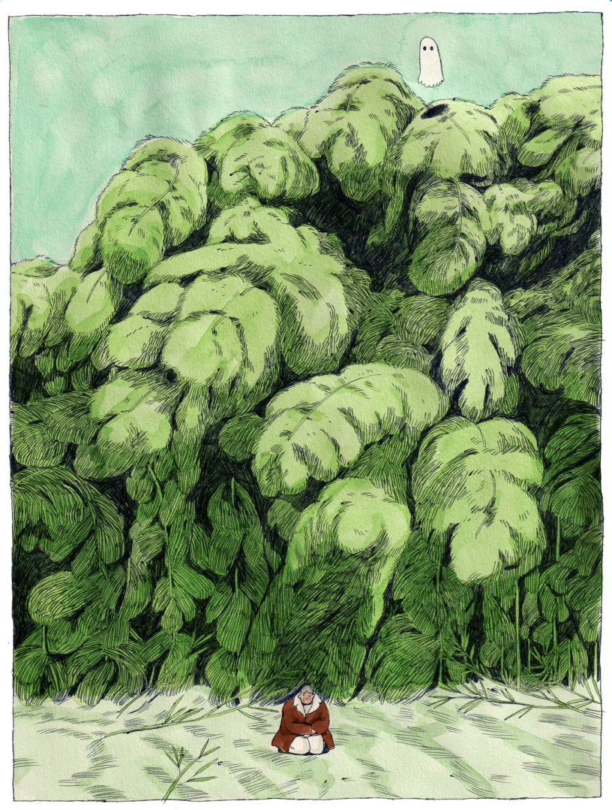

Karlotta Freier
Karlotta Freier is an accomplished Brooklyn-based artist with a background in illustration.
In 2021, she graduated from the MFA Illustration as Visual Essay program at the School of Visual Arts. She has taught illustration at the China Academy of Art and spoken as a guest speaker at universities across the United States.


Freier's work has also been exhibited in a variety of solo and group exhibitions, as well as festivals worldwide. Her achievements have been recognized by the Art Directors Club, which awarded her a Cube in 2018 and a Pencil for Best Illustration Portfolio in 2021.